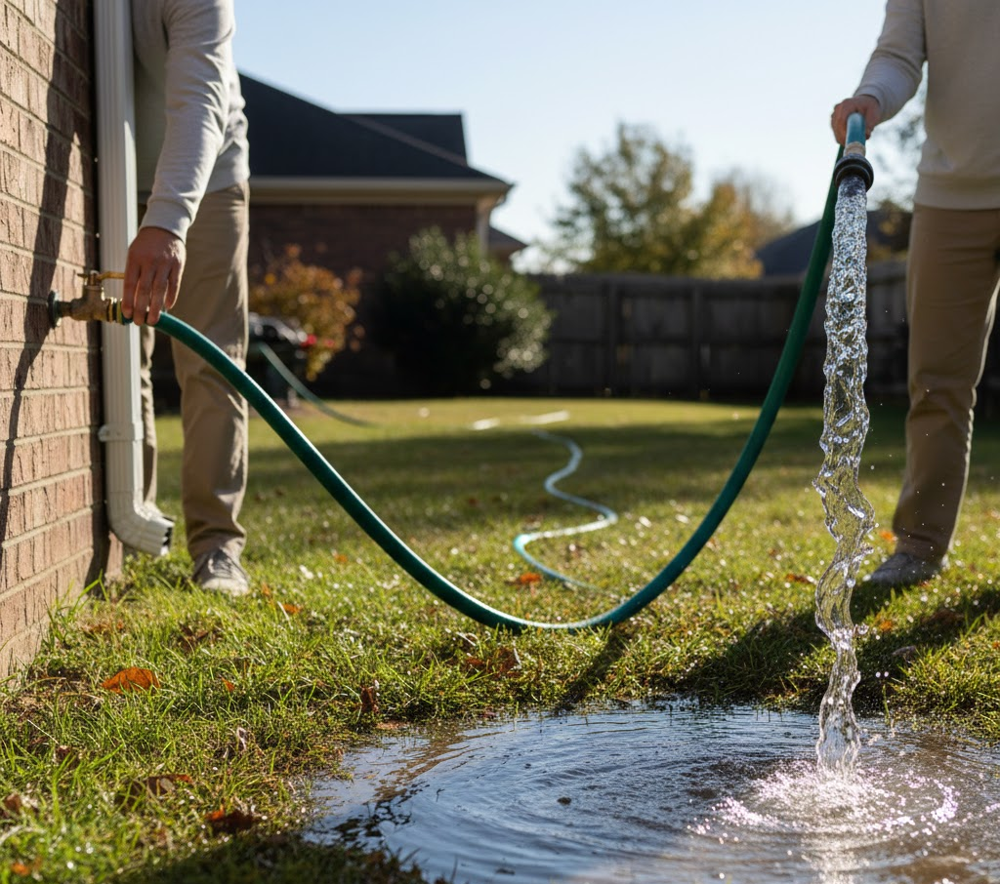

🚰 La electricidad como un río
🌊 El flujo continuo de energía
Para entender cómo circula la energía en un cable sin ver los electrones, podemos compararla con un sistema hidráulico cerrado: una bomba genera presión, el agua que ya está dentro de la tubería es empujada, una válvula puede abrir o cerrar el paso, y una rueda de molino en el camino aprovecha el flujo para hacer un trabajo útil (por ejemplo, moler grano).
Cada una de esas piezas tiene su equivalente en un circuito eléctrico. Lo veremos en detalle más abajo. Por ahora, quédate con la idea central: el agua fluye porque algo la empuja, y ese flujo puede hacer trabajar a un molino.

💡 Regla de proporcionalidad: si cambias la bomba por una que genera más presión, el agua fluirá con más caudal —es decir, pasará más agua por cada punto de la tubería en cada segundo—. Ese mayor flujo llegará a la rueda de molino y la hará girar más rápido.
En el circuito eléctrico, esto equivale a decir que un mayor voltaje (bomba) produce una mayor corriente (caudal), y los componentes del circuito (como un bombillo) trabajan con más energía.
🔄 Tabla de equivalencias: eléctrico vs. hidráulico
Ahora sí, veamos la traducción completa. Cada pieza del sistema hidráulico tiene su gemela en el mundo eléctrico:
| Componente eléctrico | Equivalente en agua | Función en el sistema |
|---|---|---|
| Pila / batería | Bomba de agua | Impulsa y genera la presión. |
| Cable conductor | Tubería llena de agua | Conduce el flujo de un punto a otro. |
| Bombillo / LED | Rueda de molino / turbina | Aprovecha el paso del flujo para trabajar. |
| Interruptor | Llave de paso / válvula | Permite o detiene la circulación. |
📝 Trabajo en bitácora
Ingresa a tu bitácora y completa el registro funcional:
- Copia la tabla de equivalencias en tu bitácora.
- Responde en dos líneas: ¿Qué ocurre con la rueda del molino si la llave de paso se cierra por completo?
- Añade un ejemplo del colegio o de tu casa en Guacarí donde identifiques una "llave de paso" que controle el flujo de energía o de datos.
🔬 Taller de Cargas: Construye tu propio electroscopio
Antes de seguir comparando con el agua, hagamos visible la carga eléctrica: la protagonista silenciosa de todo flujo.

🧰 Materiales
- Frasco de vidrio transparente y seco, con tapa.
- Alambre de cobre grueso o clip metálico estirado.
- Un trozo pequeño de caucho, goma o corcho para hacer el aislante.
- Papel aluminio.
- Un globo o tubo de plástico.
🛠️ Construcción paso a paso
Observa el diagrama: cada parte del electroscopio tiene una función. Fíjate especialmente en dos piezas clave: el aislante de caucho y el gancho del alambre.
- Haz un orificio en el centro de la tapa.
- Coloca el aislante de caucho alrededor del alambre, justo donde va a atravesar la tapa. Sin él, la carga se escaparía por la tapa y el electroscopio no funcionaría.
- Atraviesa el alambre (ya con el aislante) por el orificio de la tapa: una punta afuera, otra dentro del frasco.
- Con la punta de adentro del alambre, forma un pequeño gancho.
- En la punta de afuera, pon una esfera pequeña de aluminio.
- Del gancho, cuelga dos láminas delgadas de aluminio, una al lado de la otra, sin que se toquen.
- Cierra el frasco.
🔍 El experimento
- Frota el globo contra tu cabello.
- Acércalo a la esfera de aluminio, sin tocarla.
- Observa cómo las láminas interiores se separan.
- Retira el globo y observa cómo vuelven a juntarse.

❓ Pregunta guía
¿Qué se está "acumulando" en las láminas para que se empujen entre sí? Compara esto con la presión del agua contenida en una tubería cerrada.
📜 Edison y el filamento delgado
Los competidores de Edison usaban filamentos anchos en sus bombillas. Edison, en cambio, eligió uno delgado. En el lenguaje del agua, eso es como elegir un tubo más estrecho: el flujo pasa más despacio, con más control, y permite llegar a más lugares con menos costo.
Esa decisión le permitió iluminar ciudades enteras con cables delgados y económicos. Su equipo encontró, además, un material que duraba más de 1.000 horas: el bambú carbonizado de Kioto, Japón.
Fuente: archivo de aula "El éxito comercial y práctico de Thomas Alva Edison".🎧 Podcast: Presión, flujo y tuberías
Escucha este audio explicativo para reforzar las relaciones proporcionales del circuito.